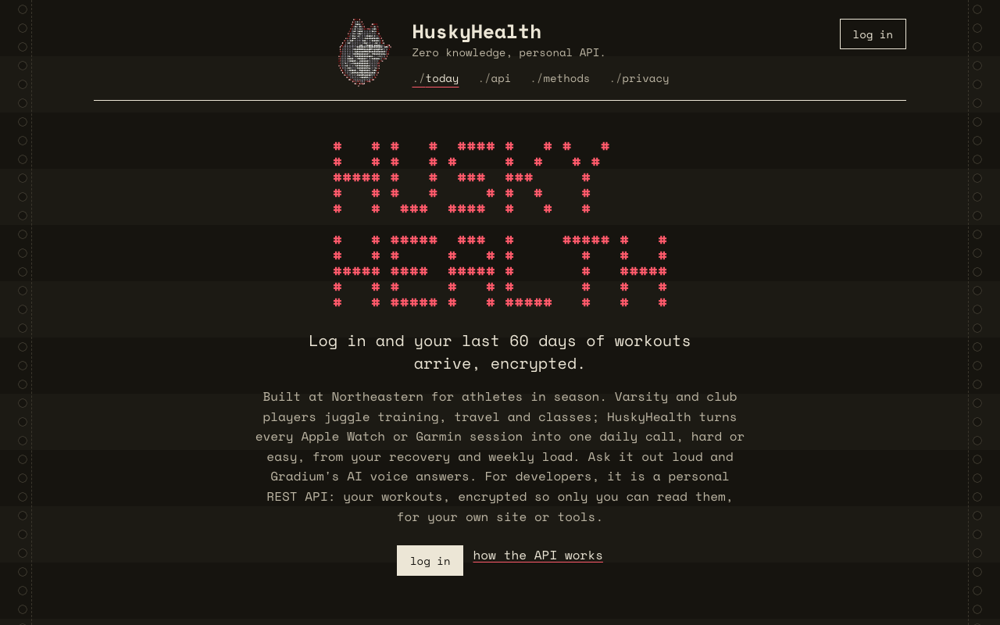
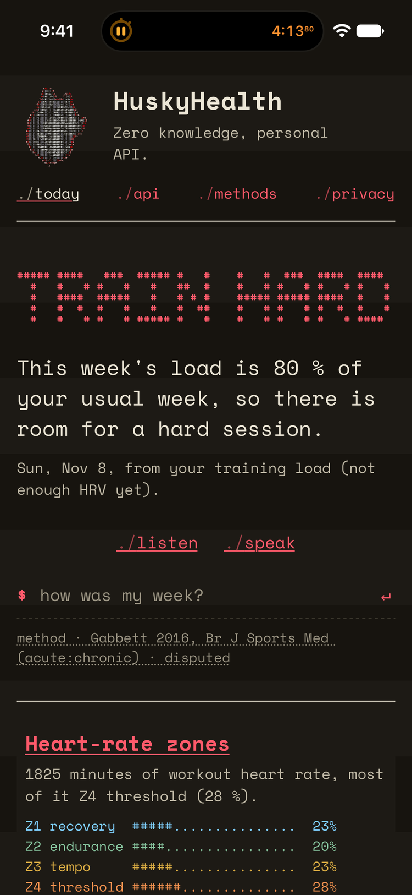
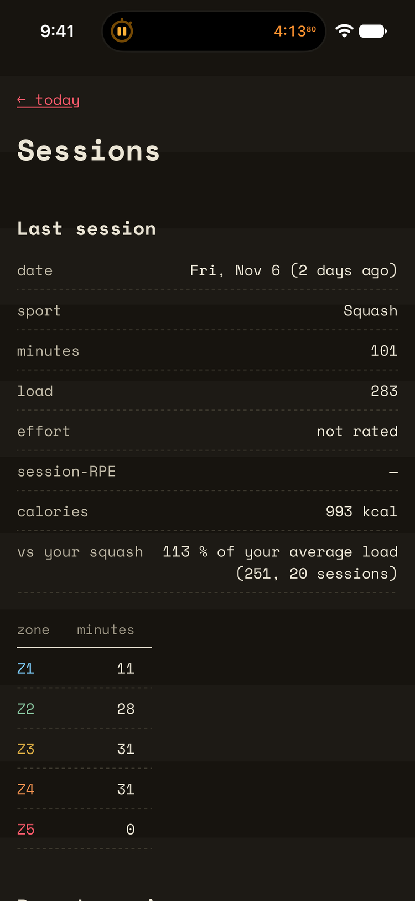
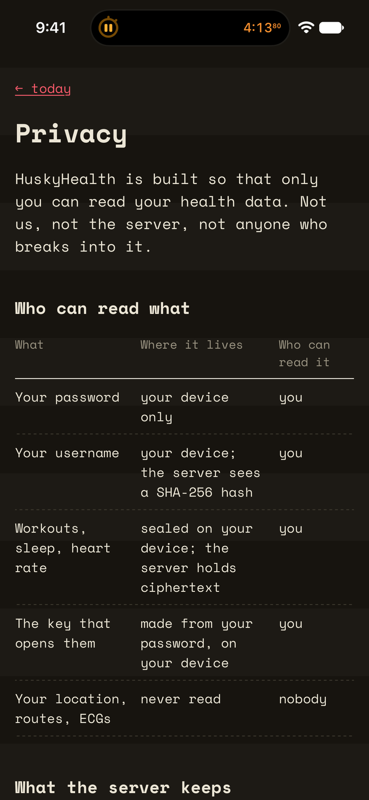

try it
logged out, you can still import an Apple Health export: it's parsed in your browser and nothing leaves it. the full flow needs an account and the iPhone app.
overview
HuskyHealth is what I built solo over a weekend at HACK1984, Northeastern's hackathon run by the Claude Builders Club, Rev, ACM and AINU on November 7–8, 2026. It won 3rd place in the Privacy-First track, the main track ("software that protects its users by design"), with a $1,000 cash prize.
The tagline is "zero knowledge, personal API." Your watch knows how hard you trained, how you slept and how fit you are, but getting that data out means either exporting a zip by hand or giving your health history to a company whose server reads it. HuskyHealth sends every Apple Watch or Garmin workout to your own private REST API automatically, and nobody can read it on the way, not even the server that stores it. On top of that API sit a daily training call from published sports science, a website and an iPhone app that show the same numbers, and a voice you can talk to. As a club squash player juggling training and classes, I built it for athletes in season first.

features
curl request behind
the answer shown underneath.
the app
The iPhone app and the website share one design: a dot-matrix printout in Space Mono, with
./today, ./api, ./methods and ./privacy as the
tabs. Today's call sits at the top with listen and speak under it, then a row for each number, and
every row opens the same detail page on both. The privacy page spells out who can read what.



how the privacy works
The honest cost: there's no password reset. Nobody can read your history, so nobody can recover it for you either.
the engine
The training call uses published methods only: Banister TRIMP and the fitness-fatigue model, session-RPE, HRV bands from Plews et al., and the acute:chronic load ratio from Gabbett, labelled as disputed wherever it's used. The engine is a single JavaScript file that runs in the browser and, as the same file, in the app, which is why both always show the same numbers. It's training insight, not medical advice.
construction
The website is a plain-JavaScript PWA with no framework: an Apple Health export is parsed in a Web Worker, and all the cryptography is the browser's own Web Crypto. The iPhone app is Expo with a Swift module for HealthKit, the Keychain, crypto and voice, and it reuses the website's JavaScript for the engine and the views. The API is a Flask app in Docker behind an nginx gateway with a method allowlist, per-client rate limits and a strict schema, on the same Raspberry Pi 5 as my homelab. 194 automated tests cover the engine, the parser, the vault, the views and the API, including a check that nothing gets logged.
architecture
The server in the middle never holds anything it can read. Everything that turns ciphertext back
into workouts happens at the ends: on your phone, in your browser, or on your own machine with the
small command-line tool that reads your whole history back.
Source? It's on GitHub.